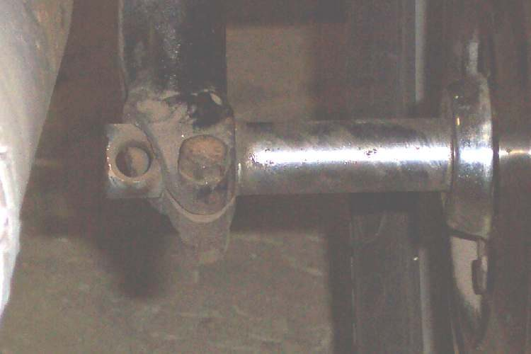

Bumps come straight through the seat with a jolt, as if the rear does not move enough. It can be set too stiff (preload too high for a light rider, tyre pressure too high), or something is stopping it moving: a seized swingarm pivot, seized shock mount bushes, or a damper that has locked up. A rear that sits so low it hits its stops also feels harsh.
Is it safe to ride?
Ride with care. A rear that does not move loses grip over bumps.
Quick checks first
- Check rear tyre pressure (K-Light 125: 210 ± 10 kPa cold).
- What preload step are the shocks on? Is it the highest with no load?
- Push down on the seat: does the rear move at all, or very little?
- Does it feel harsh only with a passenger?
Diagnose it step by step
1Is the rear tyre over-inflated?
- Yes: set it with Check tyre pressure.
- No: go to step 2.
2Is preload set high while riding alone with no load?
- Yes: lower it a step (both sides the same) with Adjust rear spring preload.
- No: go to step 3.
3Does it feel harsh mainly with a load, as a hard knock on bumps?
- Yes: the rear is bottoming. Go to Rear sits too low.
- No: go to step 4.
4When you push hard on the seat, does the rear move only a little and stiffly?
- Yes: go to step 5.
- No: check the seat foam and seat mounts; a flattened seat feels harsh too.
5Support the bike with the rear wheel off the ground. Is the swingarm pivot or a shock mount seized?
- To check, follow Check the swingarm pivot and Check the rear shock absorbers. A pivot that does not move smoothly needs cleaning, greasing or new bushes.
- If the pivot moves freely with the shocks disconnected but the shock is very stiff, the damper has seized. Replace the shock (both, on twin shocks).
Causes, most likely first
| Cause | How to confirm | Fix |
|---|---|---|
| Tyre pressure too high | Gauge reading | Check tyre pressure |
| Preload too high | High step, light load | Adjust rear spring preload |
| Bottoming under load | Hard knock with passenger | See Rear sits too low |
| Seized swingarm pivot | Stiff with shocks off | Check the swingarm pivot |
| Seized shock or mount bushes | Shock very stiff | Check the rear shock absorbers |
Reference values (K-Light 125)
| Item | Value | Source |
|---|---|---|
| Rear tyre cold pressure | 210 ± 10 kPa | K-Light 125 manual, PDF p. 71 |